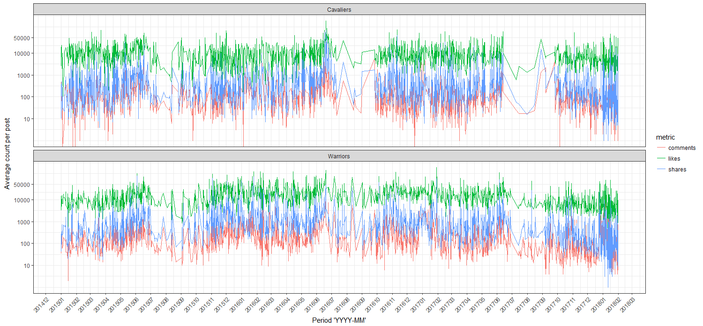

Dr. Pablo Barberá has created a useful package for pulling data from the Facebook API via R. It’s Rfacebook. This package makes it easier to collect public pages, groups, posts and personal data using an OAuth access token generated on Facebook’s Graph API.
Golden State Warriors and Cleveland Cavaliers have met in the last three NBA Finals. I used Rfacebook to extract posts from these teams from January 1, 2015, to January 31, 2018, for visualizing fan reactions in terms of Likes, Comments and Shares within NBA Regular Season and after NBA Finals.
I create a personal access token that lets me access my Facebook account from the R console.
I load Rfacebook for retrieving @cavs and @warriors data, and tidyverse for tidying and visualizing data.
library(Rfacebook)
library(tidyverse)
token <- "XXXXX" #Personal information
page_cavaliers <- getPage("Cavs", token, since='2015/01/01', until='2018/01/31')
page_wariors <- getPage("warriors", token, since='2015/01/01', until='2018/01/31')
rbind(
page_cavaliers %>%
select (created_time, likes_count,shares_count, comments_count) %>%
mutate(team = "Cavaliers"),
page_wariors %>%
select (created_time, likes_count,shares_count, comments_count) %>%
mutate(team = "Warriors")
) %>%
gather(metric, value, c(likes_count, shares_count, comments_count)) %>%
mutate(
metric = str_replace_all(metric, "_count",""),
date = as.Date(as.POSIXct(created_time,
format = "%Y-%m-%d", tz = "GMT"))) %>%
select(team, date, metric, value) %>%
ggplot(aes(x = date, y = value, group = metric)) + geom_line(aes(color = metric)) +
scale_x_date(labels = date_format("%Y%m"), date_breaks = "months") +
scale_y_log10("Average count per post", breaks = c(10, 100, 1000, 10000, 50000)) +
theme_bw() + theme(axis.text.x = element_text(angle = 45, hjust = 1)) +
facet_wrap( ~ team, scales="free_y", nrow=2) + xlab("Period 'YYYY-MM'")

4-2): Game 1 (June 4, 2015) & Game 6 (June 16, 2015)4-3): Game 1 (June 2, 2016) & Game 7 (June 19, 2016)4-1): Game 1 (June 1, 2017) & Game 5 (June 12, 2017)The regular season usually begins in October and ends in mid-April. As we can see, fans are more actives within that period and their reactions seem to be at the same level except in June 2016 where the peak has been reached. I assume that from June 2015 to the beginning of the regular season, the Warriors fans remained more actives than Cavaliers ones in reacting to Facebook posts because they won the NBA title. If so, what happened after the 2016 Finals because Warriors defeated by their rival? Even so, the Warriors fans kept commenting, sharing and liking the Facebook posts until the beginning of the new season. After the 2017 Finals win, the Warriors fans have once again shown their attachments by reacting more larger than Cavaliers fans.
Whether it’s victory or defeat the Warriors fans are always more actives. Is it because @warriors have 11 million and @cavs only have 8.6 million followers on Facebook?